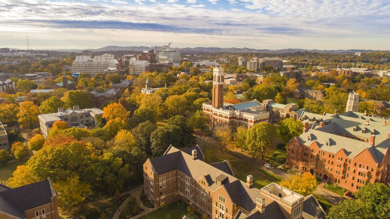

Graduated from Vandy!!!
Today I took the last exam of my undergraduate college career. The campus was peaceful and quiet, as most people had already left for winter break. Although I expected the end to be more ceremonious than this, I couldn't help but think that the rare tranquility called for a moment of self-reflection.
For me, college was a juxtaposition of accompolishments and failures, of hope and despair, of dreams and nightmares. Looking back, there were memories that I cherish dearly as well as things that I deeply regret. At the end of the day, the most important thing about 3.5 years at Vanderbilt is that I grew tremendously as a person, both in terms of my technical knowledge and my mental maturity. And for that, I am content and forever grateful.
